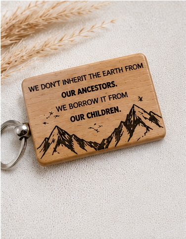

Handcrafted Wood Furniture Built in North Texas
Shop ready-made keychains, bookmarks, coasters and more — ships nationwide, checks out online. Prefer something bigger? Custom benches, porch swings, entryway tables and cedar planters are handcrafted locally for homes, patios and gardens across Frisco, McKinney, Prosper, Celina and nearby areas.

Best Sellers
Our most popular pieces — pick your options and add straight to your cart, right from the home page.
Featured Woodwork

Shop Ready-Made Items
Keychains, bookmarks, coasters and more — in stock now and ships nationwide.
Shop now →
Console Tables
Entryway-ready pieces with farmhouse styling, lower shelving and custom stain options.
See furniture →
Porch Swings
Made-to-order swings built for relaxing Texas patios and front porches.
See outdoor pieces →
Garden Planters
Cedar planters in multiple sizes with optional stain or paint upgrades.
See outdoor pieces →
Solid Wood Benches
Simple, sturdy designs for entryways, porches, mudrooms and patios.
See furniture →
Laser Engraving
Custom keychains, bottle openers, coasters, display stands and bulk logo orders.
See engraving work →Built by hand, not mass produced.
Lonestar Buckeye Woodworks is a locally owned woodworking shop in North Texas specializing in handcrafted furniture and outdoor planters. The focus is simple: build practical pieces that look good, hold up well, and feel at home in real Texas spaces.
Every project is built by hand using quality lumber and straightforward construction. That means custom sizing, stain choices and local pickup options without the big-box feel.

Project Gallery Preview


Frequently Asked Questions
Common questions about ordering, pickup and shipping.
Do all your pieces ship, or is pickup required?
Small engraved goods — keychains, bookmarks, coasters, bottle openers and cutting boards — ship anywhere in the US. Furniture and outdoor pieces like porch swings, benches, console tables and cedar planters are built locally and available for local pickup only, within about 50 miles of McKinney, TX.
How long does an order take?
Most custom furniture and outdoor pieces — porch swings, benches, console tables, planters — take about 7-20 days depending on size and complexity. Most laser-engraved items are usually ready in 3-5 days. We'll confirm a specific timeline when you request a quote or place your order.
What areas do you serve?
We're based in North Texas and regularly build for customers in Frisco, McKinney, Prosper, Celina, Plano, Little Elm and nearby areas. Enter your ZIP code at checkout on any pickup item to confirm you're in range.
Can I get a custom size, stain or finish?
Yes. Most furniture and outdoor pieces offer custom sizing along with stain or paint options — porch swings include an optional stained-finish upgrade at checkout, and anything outside our standard sizes can be quoted through the contact form.
How does engraving personalization work?
On any customizable item, add the text you want engraved (with a font choice) and/or upload a logo — PNG, JPG, SVG or PDF, up to 10MB — before checking out. We'll confirm the final engraving look with you before production begins.
Do you do bulk or event orders?
Yes — laser-engraved items are popular for weddings, HOA gifts, closing gifts, realtor gifts and business branding. Quantity pricing on keychains, bookmarks and bottle openers drops automatically at higher counts, or reach out for a custom bulk quote on larger orders.
How do I request a custom quote?
Use the contact form to share your project type, approximate size, finish preferences and any inspiration photos or sketches — we'll follow up to talk through options, timing and pricing.
What's your return policy?
Because every piece is custom-built to order, we don't accept general returns or refunds. That said, if you're truly unsatisfied with anything, we want to make it right — for laser-engraved items, email us at info.lonestarbuckeye@gmail.com and we'll work with you directly; for larger custom furniture and outdoor orders, we'll fix whatever the issue is.
Looking for a custom piece?
Whether you need a porch swing, a bench, a console table or a set of planters, we can build to fit your space and style. Start with a quick project request and we’ll take it from there.